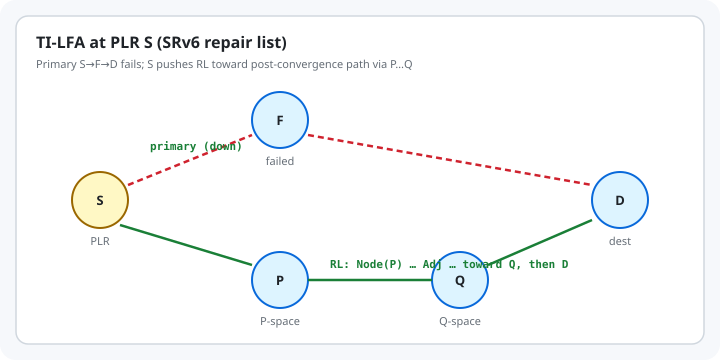

Segment Routing, SRv6, and TI-LFA
Segment Routing, SRv6, and TI-LFA
IGP shortest paths are easy to explain and slow to heal. Classic Loop-Free Alternates (LFA) and Remote LFA cover many failures but not all topologies. Segment Routing (SR) (RFC 8402) lets the ingress (or a repair point) encode an explicit path as a list of segments. On IPv6, that list lives in the SR Header and is programmed with SRv6 network programming (RFC 8986). TI-LFA (RFC 9855) uses those segments so a Point of Local Repair (PLR) can pre-install a loop-free backup that follows the expected post-convergence path — topology-independent coverage in two-connected IGP areas, without Targeted LDP tunnels. This chapter stays vendor-neutral and RFC-first.
Learning goals
By the end of this chapter you can:
- State the SR architecture: Prefix-SID / Adjacency-SID, SR-MPLS vs SRv6
- Explain SRv6 SID lists, active segment, and head-end behaviors at a PLR
- Define TI-LFA, P-space / Q-space, and Repair List (RL)
- Predict what the PLR pushes when the active segment is a node SID vs an adjacency SID
- Relate TI-LFA to BFD-scale detection: FRR is local and precomputed; IGP still converges
Thesis
TI-LFA is not a new IGP. It is a local repair algorithm that expresses post-failure shortest paths as SR segment lists the PLR can push the moment a link (or protected node/SRLG) dies — then withdraws that repair when the IGP SPF at the PLR catches up.
Mental model
Before failure (IGP SPF): S ──→ F ──→ … ──→ D
\ ↑
After local repair (TI-LFA): └─ RL → P ⋯ Q ────┘
| Term (RFC 9855 / 8402) | Meaning |
|---|---|
| PLR | Router that detects local failure and activates a precomputed backup |
| RL (Repair List) | Segment list encoding a loop-free path avoiding the protected resource |
| P-space | Nodes reachable from the PLR without traversing the failed resource |
| Q-space | Nodes that can reach the destination without traversing the failed resource |
| Post-convergence path | SPF path the PLR would use after the IGP absorbs the failure |
SR data planes
| Plane | How a segment is carried | Primary RFCs |
|---|---|---|
| SR-MPLS | MPLS label stack | RFC 8402, RFC 8660 |
| SRv6 | IPv6 destination + optional SRH (RFC 8754); behaviors in RFC 8986 | RFC 8402, 8754, 8986 |
SRv6 Adjacency SIDs are often globally routed, so RLs can be shorter than SR-MPLS (less need to precede an Adj-SID with a Prefix-SID) — RFC 9855 §7.2.
Worked examples
Case 1: Architecture in one page (RFC 8402)
A segment is an instruction. Common kinds:
- Prefix-SID (node segment) — “go to this node via the IGP algorithm (usually SPF)”
- Adjacency-SID — “take this specific link / adjacency”
An SR Policy is an ordered list of segments. On SRv6, the active segment is the IPv6 Destination Address; Segments Left in the SRH walks the list (RFC 8402 §3.1.3 summary).
Operators instantiate SRv6 SIDs explicitly — ordinary interface addresses are not SIDs by default.
Case 2: TI-LFA repair flavours (RFC 9855 §5)
| Situation along post-convergence path | RL shape |
|---|---|
| Direct neighbor in P ∩ Q | Empty RL; just change next hop (post-convergence LFA) |
| Remote PQ node | Single node segment to that PQ |
| Adjacent P then Q | Node-SID(P) then Adj-SID(P→Q) |
| Distant P and Q | Node-SID(P) + explicit path EP(P,Q) (Adj-SID list or optimized mix) |
Protection modes: link, node, or SRLG failure assumptions when computing the backup.
Case 3: What the PLR does to the packet (RFC 9855 §6–7)
Active segment is a node SID. Keep it; add the RL so the node SID becomes the first segment after the repair list.
Active segment is an adjacency SID S–F (protected). Apply NEXT on that Adj-SID, then PUSH an RL that restores traffic toward F (or toward a Q whose path to the following node SID avoids the failure) — details in §6.2.1–6.2.2.
SRv6 transit PLR. Add the SID list using RFC 8986 head-end behaviors (e.g. H.Encaps / SRH push as implemented). Endpoint PLR: run endpoint processing first, then protect as transit.
USD flavor (RFC 8986) is often cited so the last repair endpoint can decapsulate the outer header the PLR added and forward the inner packet — useful for TI-LFA encapsulation on P routers.
Case 4: Numbers from RFC 9855 Appendix B (SR-MPLS measurements)
On real SP/enterprise topologies measured in the RFC:
- Link / local SRLG protection: ≤1 SID repair path covers >99% of prefixes in the data set
- Node protection: ≤2 SIDs yields about 99% coverage
Exact hardware MSD limits still matter; implementations may optimize RL length.
The trap
- Expecting TI-LFA to protect inter-domain exits or non-IGP destinations — RFC 9855 limits scope to link-state IGP areas.
- Forgetting micro-loops during distributed convergence: TI-LFA is complementary to loop-free convergence methods (RFC 5715, RFC 8333, etc.), not a full substitute.
- Building RLs from protected Adj-SIDs and then suffering double FRR if a repair hop fails (RFC 9855 §9); some implementations prefer unprotected Adj-SIDs in RLs.
- Assuming SR Policies with custom constraints stay on-policy during local repair — TI-LFA does not know head-end TE constraints; use policy-level protection or Flexible Algorithm-aware TI-LFA (RFC 9855 §8) when constraints matter.
- Confusing detection (BFD, carrier) with repair encoding (TI-LFA): you need both for fast restoration.
The boring rule
Run a link-state IGP with SR enabled; precompute TI-LFA RLs toward post-convergence paths; detect failures quickly; keep RL depth inside MSD; let SPF release the repair after convergence.
Try this
- Read RFC 8402 §§1–3 (architecture) and RFC 8986 §5 (head-end behaviors) skim.
- Walk RFC 9855 §5 and Figure 1: compute P-space / Q-space intersection with the post-convergence path on paper.
- On a lab with FRR or another open IGP+SR stack (when you already have it), enable SR and TI-LFA and compare
showrepair SIDs before/after shutting a link — no new packages required for reading RFCs alone. - Related in this book: BFD for detection timers; this chapter for where packets go during the repair window.
Sources
- RFC 8402 — Segment Routing Architecture. https://www.rfc-editor.org/rfc/rfc8402
- RFC 8986 — SRv6 Network Programming. https://www.rfc-editor.org/rfc/rfc8986
- RFC 8754 — IPv6 Segment Routing Header (SRH). https://www.rfc-editor.org/rfc/rfc8754
- RFC 9855 — Topology Independent Fast Reroute Using Segment Routing (TI-LFA). https://www.rfc-editor.org/rfc/rfc9855
- RFC 8660 — SR-MPLS (for the MPLS twin of the same RL algorithms)